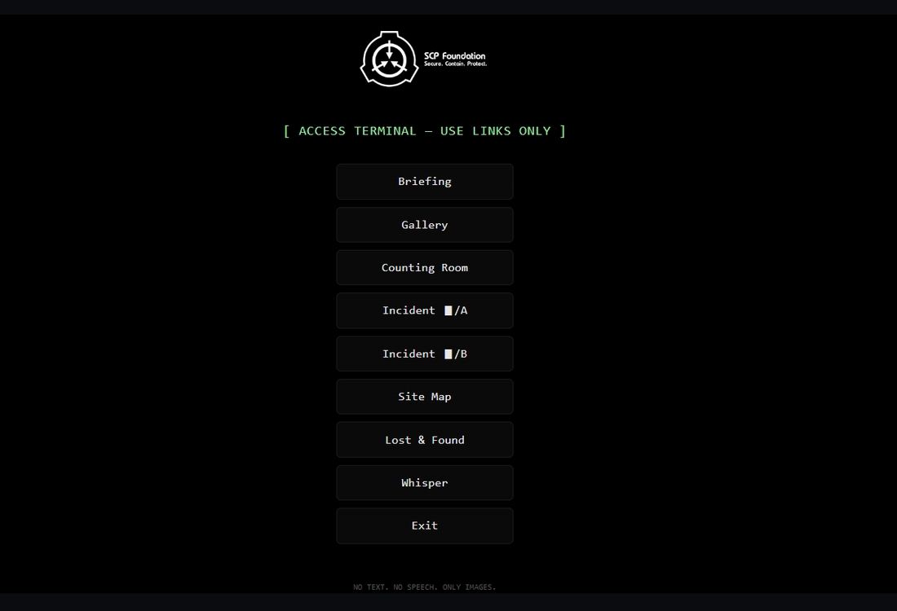

Net Art
This is my html based net-art. I decided to use SCP-2521 for a concept website on details for countering the anomaly You can check out the website here: Net Art project here.
This is my html based net-art. I decided to use SCP-2521 for a concept website on details for countering the anomaly You can check out the website here: Net Art project here.